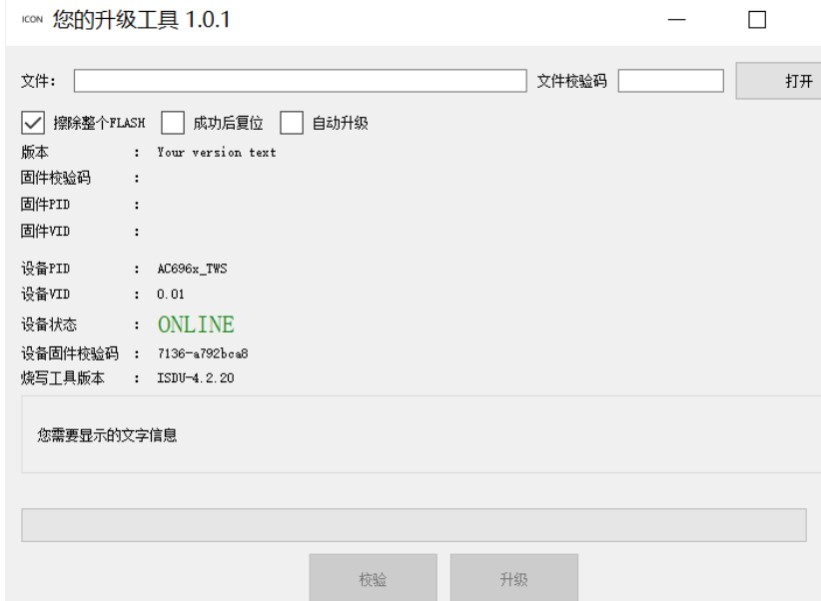
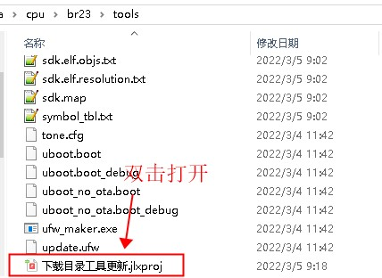
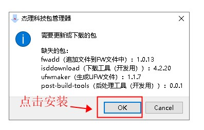
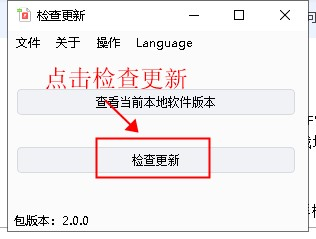
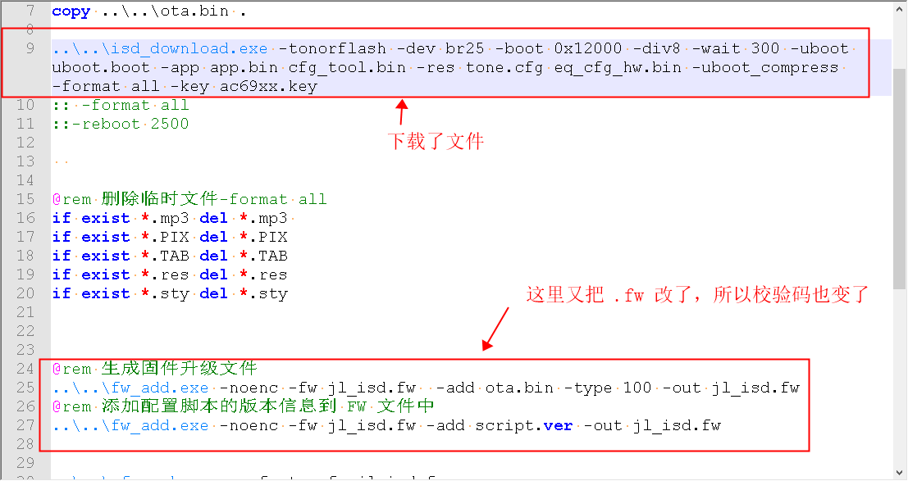
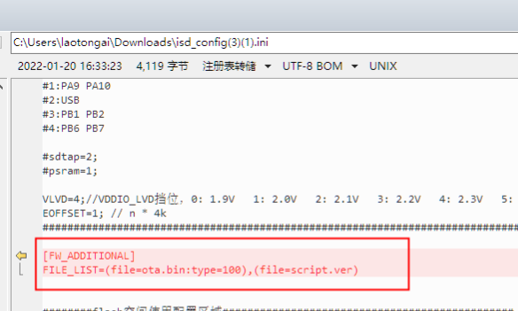
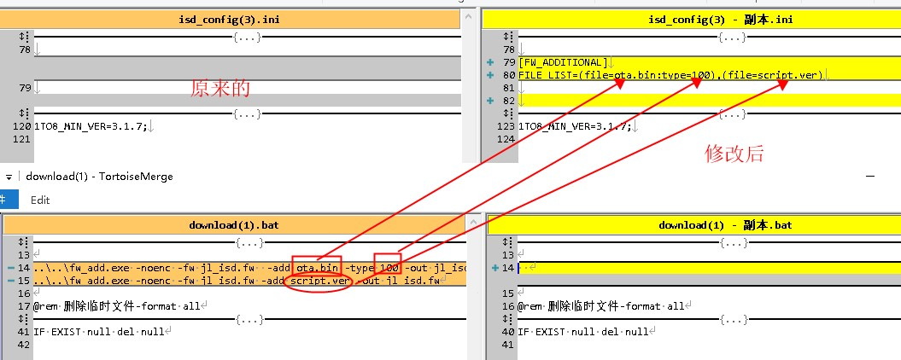

1.4.1. 读取固件校验码相关问题
1.4.1.1. 简介
在烧录的时候，烧录工具会将 fw/ufw 文件中 flash 数据的校验码写入到小机中。写入后，可以通过【固件升级程序（点击此处下载）】读取。使用方式：
打开固件升级程序
用强制升级工具4.0，接入样机以及PC，并按升级按钮使得样机进入下载模式后，软件会有类似下图：

1.4.1.2. 升级下载目录中的工具
一些旧的 SDK 中的下载工具，可能是相对较旧的版本。这些工具还未能完全支持校验码相关的功能。所以需要首先升级到最新的工具版本。 双击下载目录中的【下载目录工具更新.jlxproj（如果没有，点击此处下载最新版本）】，如下图：

打开后，可能是下面的两种之一：


按图中提示来选择，并安装最新的工具。
1.4.1.3. 如何查看fw/ufw文件的校验码
利用【校验码查看工具（点击此处下载）】，打开后选择 fw/ufw 文件即可查看。
1.4.1.4. 为什么用强制升级工具后校验码和fw/ufw文件校验码不一致
如果发现，在 Code::Blocks/Makefile/VSCode 重新编译下载后，样机中读取出来的校验码和这个时候下载目录中的update.fw或者jl_isd.fw文件的校验码不一致。
这一般是因为，在批处理download.bat中，用isd_download.exe打包 fw 文件，并下载程序到样机后，还利用fw_add.exe对 fw 文件进行了修改，如下图：

为了处理这个问题，需要确保用isd_download生成 fw 文件后，不能再去修改 fw 文件。
所以需要把fw_add对应的从 bat 脚本中删除，并将其功能在 ini 文件中实现，如下图：

修改的过程：
找到
download.bat脚本中，在isd_download之后，利用fw_add对 fw 文件进行修改的地方。删除对应的
fw_add行。并将其功能用在对应的ini文件中实现，如下图：
